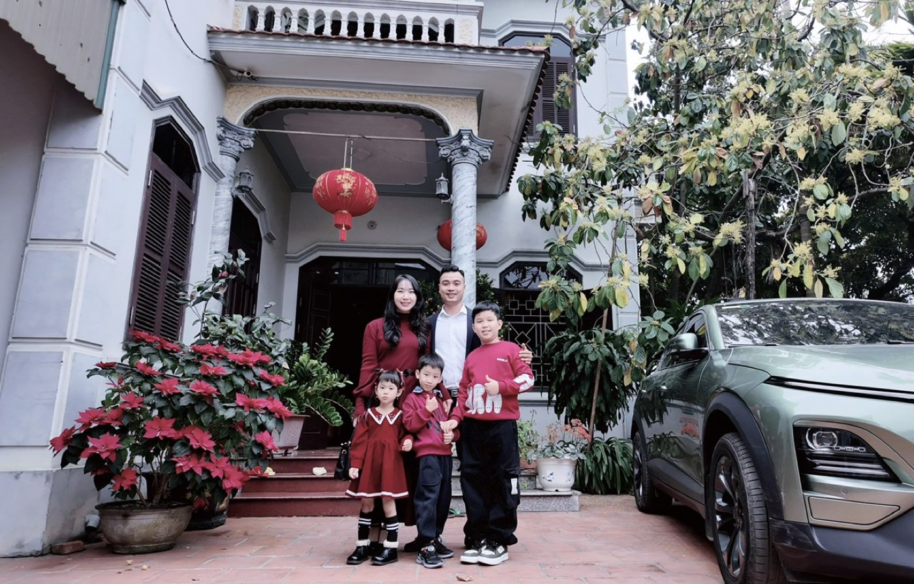

Người bố ba con và thứ duy nhất tôi còn khuyết
Có một buổi, tôi ngồi nghe một người chị đi trước nhận xét về mình. Chị nói: "Em gần như toàn diện rồi — chỉ khuyết mỗi vấn đề thời gian dành cho con." Tôi ngồi im khá lâu.
Những chuyến như thế này, trước đây với tôi là chuyện hiếm.
Im vì chị nói đúng. Và im vì tôi đã tự biết điều đó từ lâu mà chưa ai nói thẳng vào mặt.
Tôi từng nghĩ mình bận. Thật ra tôi đang vắng mặt
Lịch một ngày của tôi: sáng chạy bộ, ngày đi xem đất với khách, tối ra quán. Ngày nào cũng kín. Ngày nào tôi cũng có lý do chính đáng.
Nhưng nếu hỏi tuần rồi tôi ngồi chơi với các con được bao lâu — không tính lúc cùng ở trong nhà mà mỗi người một cái điện thoại — thì tôi không trả lời được.
Ở nhà và có mặt là hai chuyện khác nhau. Tôi ở nhà nhiều. Nhưng có mặt thì ít.
Điều làm tôi giật mình nhất: lỗi bắt đầu từ tôi
Trong cuộc nói chuyện đó, chị chỉ ra một chuỗi mà tôi chưa từng nghĩ tới: bố mẹ ngủ muộn thì con dậy muộn. Con dậy muộn thì cả buổi sáng của nhà lệch nhịp. Lệch nhịp thì chẳng còn khoảng nào cho nhau.
Tôi vẫn hay khó chịu vì các con sinh hoạt không nề nếp, vì bọn nhỏ dán mắt vào điện thoại. Hoá ra cái nếp đó, người tạo ra đầu tiên là tôi. Con cái không nghe những gì mình nói — chúng làm theo những gì chúng thấy.
Muốn sửa con thì phải sửa lịch của bố trước. Không có đường tắt nào khác.
Tôi bỏ ý định "khi nào rảnh sẽ dành thời gian cho con"
Đây là câu tôi tự nói với mình suốt mấy năm. Khi nào xong việc này. Khi nào qua đợt này. Khi nào ổn định hơn.
Rồi tôi hiểu ra: sẽ không có lúc nào rảnh cả. Nghề tôi làm là nghề khách gọi lúc nào cũng phải nghe. Nếu chờ rảnh thì các con lớn mất, và cái mình bỏ lỡ thì không mua lại được bằng tiền — kể cả sau này có tiền thật.
Nên tôi đổi cách: không chờ có nhiều thời gian, mà lấy những khoảng đang có và ở đó cho thật.
Ba cách tôi đang làm — nói thật là chưa cách nào hoàn hảo
Một: ghép việc và gia đình lại, thay vì tách đôi. Trước đây tôi nghĩ hai thứ này phải chọn một. Giờ có hôm cả nhà đi ăn sáng, rồi ra quán cà phê — mấy mẹ con ngồi chơi, tôi ngồi bàn bên quay xong loạt video theo kịch bản đã dựng sẵn từ tối hôm trước. Không phải mô hình lý tưởng, nhưng hơn hẳn việc tôi đi một nơi còn cả nhà ở một nơi.
Hai: làm trước, rồi hỏi một câu. Tôi không giỏi giảng giải. Nên sau khi chạy xong 42km, tối về tôi chỉ hỏi các con đúng một câu: "Tại sao bố chạy được marathon mà các con lại chưa tập môn thể thao nào nhỉ?"
Tôi không nói thêm gì nữa. Và các con ôm tôi.
Đó là buổi tối tôi nhớ lâu nhất năm nay. Không phải vì tôi dạy được gì — mà vì tôi hiểu ra cách duy nhất mình dạy được là làm cho con thấy, rồi để con tự nói ra.
Ba: giữ đúng những lời hứa nhỏ. Hứa mua sách vẽ thì mua sách vẽ. Hứa mua bộ lắp ghép thì mua bộ lắp ghép — và quan trọng hơn: ngồi xếp cùng con cả buổi chiều, chứ không phải mua xong đưa cho con rồi quay lại điện thoại.
Hôm đó tôi ngồi đến năm giờ chiều mới quay lại việc. Việc vẫn chạy. Không sập gì cả. Hoá ra nhiều việc tôi tưởng gấp thì không gấp như tôi nghĩ.

Còn một thứ tôi phải sửa ở chính mình
Tôi nói thẳng cho công bằng: tôi khá nóng tính. Đang vui mà có việc gì trục trặc là tôi cáu ngay. Trước đây tôi còn cục hơn nhiều — việc gì cũng tự quyết, rồi về nhà chỉ thông báo cho vợ con, chứ không phải bàn.
Cái đó không sửa xong trong một tháng. Nhưng ít nhất giờ tôi biết nó là vấn đề — và biết rằng một người bố hay cáu thì có ngồi cạnh con bao lâu cũng không tạo được cái mà mình muốn tạo.
Thứ tôi muốn để lại
Có cuốn sách tôi đã nghe bản sách nói mấy lần rồi, nhưng vẫn đi mua bản in bìa cứng. Lý do đơn giản: tôi muốn viết mấy dòng của mình vào trong đó rồi để dành cho các con.
Sau này tôi không chắc mình để lại được cho các con bao nhiêu tài sản. Nhưng tôi muốn trong nhà có mấy cuốn sách mà mở ra, con thấy chữ của bố ở trang đầu.
Nếu anh/chị cũng đang là bố mẹ và cũng đang bận như tôi, tôi không có lời khuyên nào to tát. Chỉ có một câu tôi tự hỏi mình mỗi tối, và nó khó chịu thật sự: hôm nay mình có mặt với con được bao lâu — có mặt thật, không phải ngồi cùng phòng?
Trả lời được câu đó là biết ngày mai phải làm gì.
"Rồi, ngày mới tốt lành nhé."
Sống tử tế · Kiếm tiền hạnh phúc · Cho đi giá trị
Anh/chị giữ khoảng thời gian nào cho con giữa lịch làm việc?
Kể tôi nghe cách anh/chị đang làm — tôi đang học, và học từ người thật thì nhanh hơn đọc sách. Tôi đọc và trả lời trên Facebook mỗi ngày.
Theo dõi trên Facebook